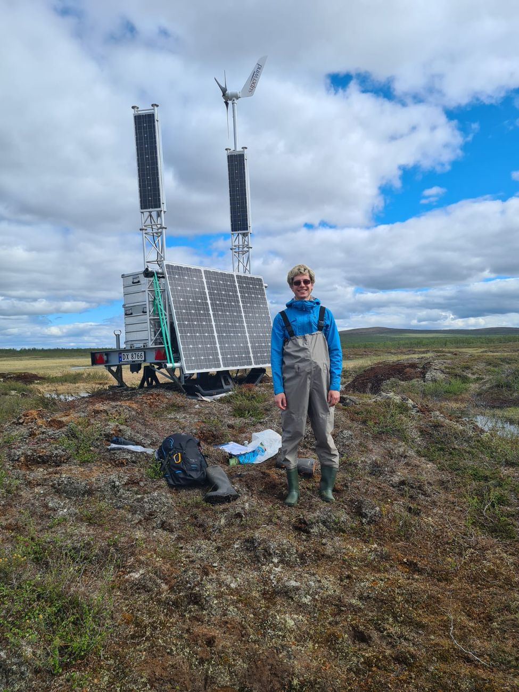

Each project below pairs a field question with a
sequencing dataset and an open analysis pipeline.
Seasonal turnover in the dung fungal community of willow ptarmigan
2022–present
In progress
Willow ptarmigan (Lagopus lagopus) switch diet sharply between
a winter of woody browse and a summer of green forage. This project
asks whether that dietary shift is written into the fungal community
of their droppings. I sampled dung at Lifjellet, Lierne (Norway) in
March and June across three years, sequenced fungal ITS2 alongside
plant ITS2 from the same samples, and tested for seasonal compositional
turnover, diversity change, and covariation between individual fungal
taxa and the plants in the diet.
The analysis chain runs from demultiplexing and primer trimming through
DADA2 denoising and LULU curation to UNITE-based taxonomy, then into
community-level models: robust-Aitchison PERMANOVA, Hill-number
diversity, generalised linear latent variable models and a joint
species distribution model. A separate strand documents "dark" fungal
taxa — sequences with no confident named match — against UNITE Species
Hypotheses.
Root-associated fungi of Pernettya across an Andean elevational gradient
2019–2024
Root fungal communities sampled across four sites and a 2700–3800 m
elevational gradient spanning montane forest, subpáramo and páramo.
The design nests PCR replicates within root samples within plant
individuals within locations, which made it a good testbed for how much
of an apparent community pattern survives technical replication.
The metabarcoding pipeline developed here — demultiplexing through
DADA2, LULU curation, contaminant removal using negative and extraction
blank controls, and reference-based removal of non-fungal reads — is
the ancestor of everything I have run since.
Permafrost decomposition on the Finnmark tundra — BSc thesis
2022–2023
More detail to come

The monitoring site at Iskoras, Finnmark.
My BSc thesis grew out of a field season at Iskoras, near Karasjok in
northernmost Norway (~69.5°N), where thawing permafrost is releasing
carbon that has been locked in frozen ground for millennia. How fast that
carbon breaks down once it thaws is one of the larger open terms in
projections of Arctic warming.
I measured decomposition using the Tea Bag Index — a
deceptively simple standardised method in which commercial green and rooibos
tea bags are buried, recovered after a fixed interval, and weighed. Because
the two teas decompose at very different rates, the pair yields both a
decomposition rate and a stabilisation factor, comparable against any other
site in the world running the same protocol. Over a hundred bags went into
the ground across the site's thaw gradient.
The work sat within the wider permafrost project led by Hanna Lee at the
NTNU Department of Biology, where I first joined the site as a field
assistant in the summer of 2022.
In the press
Nancy Bazilchuk, “Tea bags — and more — on the tundra,”
Norwegian SciTech News, 11 October 2023 — a visit to the
Iskoras field site, including the tea-bag work.
Tea Bag Index
Permafrost thaw
Decomposition
Carbon cycling
Finnmark, Norway
Publications
Replace the entries below with your own — one <li> per paper.
Angulo Serrano, D., & co-authors.Title of the paper goes here.Journal name, year.DOI
Angulo Serrano, D., & co-authors.Another paper title.Journal name, year.DOI
Code & reproducibility
Every project here has a public repository holding the numbered scripts
that produce its results, in order, from raw reads to final figures.
Analyses are written in R and rendered with Quarto, so a supplementary
appendix can be rebuilt from the same source that produced the numbers.
Looking for a specific script, dataset or intermediate object?
Get in touch — I am glad to share.